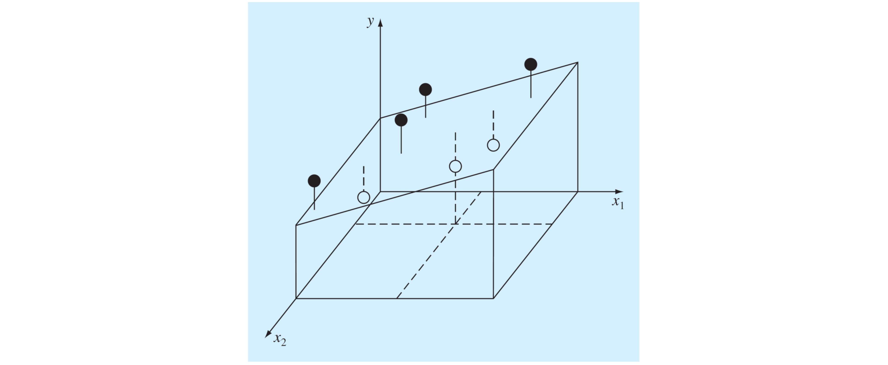

Ajuste de curvas por mínimos cuadrados
Contents
3. Ajuste de curvas por mínimos cuadrados#
3.1. Introducción#
La gran mayoría de las fórmulas en la ciencia no pueden ser determinadas de forma teórica y debemos recurrir a relaciones empíricas en base a experimentos.
Por ejemplo, en mecánica de fluidos la fuerza de arrastre, \(F_D\), es proporcional al cuadrado de la velocidad del flujo alrededor el cuerpo, \(V\):
donde \(\rho\) es la densidad del fluido, \(A\) es el área proyectada en la dirección del flujo, y \(C_D\) es el coeficiente de arrastre.
{kind=link}
Aunque esta relación es válida para cualquier cuerpo, el valor de \(C_D\), cambia dependiendo del objeto.
En la gran mayoría de los casos, este valor no se puede determinar de forma analítica, y debemos recurrir a ensallos en un tunel de viento para determinar la relación entre estas dos variables.

El valor de \(C_D\) estará dado por la curva que mejor se ajuste a estos valores experimentales.
3.1.1. Regresión lineal unidimensional#
Consideremos el caso más simple, donde buscamos ajustar nuestros datos \(x_i, y_i\) \((i = 0,1,\cdots,n)\) al modelo:
donde \(a_0\) y \(a_1\) son coeficientes representando el intercepto y la pendiente, respectivamente.
¿Cómo determinamos los coeficientes?
Si intentamos determinar \(a_0\) y \(a_1\) mediante un sistema de ecuaciones:
Notamos que tenemos un sistema de 2 incognitas y \(n\) ecuaciones linealmente independientes. Es decir, no existe una solución exacta a este problema.
Lo que debemos hacer, entonces, es encontrar el valor de \(a_0\) y \(a_1\) que minimiza el error.
Particularmente, buscamos minimizar la expresión
donde \(i = 1,...,m\) son los datos de la muestra considerando un total de \(m\) datos.
Este criterio se denomina ajuste por mínimos cuadrados.
3.1.2. Ajuste por mínimos cuadrados paso a paso#
Primero, para buscar el mínimo de \(S_r\) aplicamos la derivada respecto a sus variables, es decir, \(a_0\) y \(a_1\)
El mínimo está dado cuando ambas derivadas son \(0\).
El resultado podemos expresarlo como un sistema de ecuaciones lineales:
La solución de este sistema nos entregará los valores de \(a_0\) y \(a_1\)
Consideremos los datos del problema del tunel de viento
\(V\) (m/s) |
10 |
20 |
30 |
40 |
50 |
60 |
|---|---|---|---|---|---|---|
\(F\) (N) |
25 |
70 |
380 |
550 |
610 |
1220 |
import numpy as np
# creamos un arreglo con los datos tabulados
xi = np.array([ 10, 20, 30, 40, 50, 60, 70, 80]) # velocidad (m/s)
yi = np.array([ 25, 70, 380, 550, 610, 1220, 830, 1450]) # fuerza de arrastre (N)
# construimos un sistema Ax = b
m = len(xi)
A = np.array([[ m , np.sum(xi) ],
[np.sum(xi), np.sum(xi**2)]])
b = np.array([[np.sum(yi)],
[np.sum(yi*xi)]])
# resolvemos el sistema
a = np.linalg.solve(A,b)
print('Modelo lineal: \n y = %.3f + %.3f*x' % (a[0], a[1]))
Modelo lineal:
y = -234.286 + 19.470*x
import matplotlib.pyplot as plt
# formato del lienzo
plt.rcParams.update({'font.size': 10}) # tamaño de fuente
plt.figure(figsize = (5,4)) # tamaño del lienzo
# ploteamos nuestro resultado
y = lambda x: a[0] + a[1]*x # creamos una función con el modelo de ajuste
x = np.linspace(0,85,100) # creamos un arreglo para ploteo
plt.plot(xi, yi, 'bo',label = 'xi, yi') # gráfico con los datos tabulados
plt.plot(x, y(x), '-r', label = 'y = %.2f + %.2fx' % (a[0], a[1])) # gráfico del modelo
plt.xlabel('Velocidad del viento, $V$ (m/s)') # etiqueta eje x
plt.ylabel('Fuerza de arrastre, $F$ (N)') # etiqueta eje y
plt.legend() # incluir leyenda
plt.show() # mostrar gráfico
3.1.3. Cuantificación del error#
Para cuantificar la calidad de nuestro modelo utilizaremos el coeficiente de determinación, \(r^2\):
donde
\(S_r = \sum\left[y_i - y(x_i)\right]^2\) es el error del modelo de regresión (\(y(x) = a_0 + a_1x\), en este caso)
\(S_t = \sum\left(y_i - \bar{y}\right)^2\) es la desviación de los datos respecto a la media \(\bar{y}\).
El coeficiente de determinación nos permite cuantificar la calidad de nuestro modelo para representar una muestra, en comparación con la media \(\bar{y}\).
En python este valor está dado por la función r2_score de la librería scikit-learn
from sklearn.metrics import r2_score
print('coef. de determinación')
print('r2 = %.4f' % r2_score(yi,y(xi)))
coef. de determinación
r2 = 0.8805
El resultado indica que el modelo lineal explica un 88.05% de los datos
Notar que
r2_score(yi,y(xi)))requiere dos arreglos de iguales dimensiones.
3.1.4. Linealización de funciones no lineales#
Existen algúnos modelos no lineales comúnes en ingeniería que pueden ser linealizados para luego realizar ajuste por mínimos cuadrados.
Algúnos ejemplos son:
modelo exponencial
modelo de potencia
modelo de tasa de crecimiento de saturación

Nota Para el modelo de potencia, podemos usar “\(\log\)” o “\(\ln\)” para linealizar, tomando la precaución de usar la función inversa correcta para recuperar el modelo original, es decir: \begin{align*} y &= 10^{\log \alpha + \beta\log x}\quad\mathrm{o,}\ y &= e^{\ln \alpha + \beta\ln x} \end{align*}
Los coeficientes del modelo linealizado serán diferentes dependiendo de si se usa “\(\log\)” o “\(\ln\)”. Sin embargo, el modelo original debe ser el mismo, independientemente de la función utilizada para la linealización.
Analicemos el ejemplo anterior, ahora ajustando los datos al modelo de potencia \(y = \alpha x^{\beta}\)
Primero, aplicaremos un modelo de ajuste de la forma: \(\ln(y) = a_0 + a_1\ln(x)\).
import numpy as np
from numpy import log # en python log(x) = ln(x)
xi = np.array([ 10, 20, 30, 40, 50, 60, 70, 80])
yi = np.array([ 25, 70, 380, 550, 610, 1220, 830, 1450])
# linealizamos las variables
log_xi = log(xi)
log_yi = log(yi)
# construimos un sistema Ax = b
m = len(xi) # numero de datos
A = np.array([[ m , np.sum(log_xi) ],
[np.sum(log_xi), np.sum(log_xi**2)]])
b = np.array([[np.sum(log_yi)],
[np.sum(log_yi*log_xi)]])
# resolvemos el sistema
a = np.linalg.solve(A,b)
print('Modelo linealizado: \n ln(y) = %.3f + %.3f*ln(x)'
% (a[0], a[1]))
Modelo linealizado:
ln(y) = -1.294 + 1.984*ln(x)
Para retornar al modelo original, aplicamos
donde deducimos que \(\alpha = e^{a_0}\) y \(\beta = a_1\).
alpha = np.exp(a[0])
beta = a[1]
print('Modelo no-lineal')
print('y = %.3f*x^%.3f' % (alpha, beta))
Modelo no-lineal
y = 0.274*x^1.984
Graficamos el resultado con el modelo no-lineal \(y = \alpha x^{\beta}\)
# formato del lienzo
plt.rcParams.update({'font.size': 10}) # tamaño de fuente
plt.figure(figsize = (5,4)) # tamaño del lienzo
# ploteamos nuestro resultado)
y = lambda x: alpha*x**beta # función con el modelo no-lineal
x = np.linspace(1,85,100) # creamos un arreglo para ploteo
plt.plot(xi, yi, 'bo',label = 'xi, yi') # gráfico con los datos tabulados
plt.plot(x, y(x), '-r', label = r'$y = %.3fx^{%.3f}$' % (alpha, beta)) # gráfico del modelo
plt.xlabel('Velocidad del viento, $V$ (m/s)') # etiqueta eje x
plt.ylabel('Fuerza de arrastre, $F$ (N)') # etiqueta eje y
plt.legend() # incluir leyenda
plt.show() # mostrar gráfico
Analizamos la calidad del modelo
# analizamos la calidad del modelo
from sklearn.metrics import r2_score
print('coef. de determinación')
print('r2 = %.4f' % r2_score(yi,y(xi)))
coef. de determinación
r2 = 0.8088
El resultado indica que el modelo lineal explica un 80.88% de los datos
El coeficiente de determinación para el modelo no-lineal (\(r^2=80.88\%\)) es menor que para el modelo lineal (\(r^2=88.05\%\)). Sin embargo, el modelo no-lineal se ajusta mejor al modelo físico (por ejemplo, \(F = 0\) para \(v = 0\)).
Por lo tanto, el modelo más adecuado para los datos es el de potencia:
3.2. Otros modelos lineales#
El procedimiento de ajuste de curva por mínimos cuadrados se puede extender para modelos de ajuste más complejos, tales como:
Regresión polinomial
Regresión lineal multivariable
3.2.1. Regresión polinomial#
En su forma general, el modelo polinomial corresponde a una función univariable de la forma
Por ejemplo, consideremos el modelo \(y = a_0 + a_1 x + a_2 x^2\). Según el método de regresión por mínimos cuadrados, la mejor curva está dada por el mínimo de:
Aplicando \(\frac{\partial S_r}{\partial a_0} =0\), \(\frac{\partial S_r}{\partial a_1} =0\) y \(\frac{\partial S_r}{\partial a_2} =0\), llegamos al sistema de ecuaciones:
Cuya solución nos entrega el valor de los coeficientes \(a_0\), \(a_1\) y \(a_2\)
3.2.2. Regresión lineal multidimensional#
Para problemas con más de una variable independiente se deben untilizar modelos multidimencionales. Un modelo común corresponde al modelo linear de la forma:
Por ejemplo, en dos dimensiones tenemos un modelo de la forma \(y = a_0 + a_1x_1+a_2x_2\). La mejor curva está dada por el mínimo de:
Aplicando \(\frac{\partial S_r}{\partial a_0} =0\), \(\frac{\partial S_r}{\partial a_1} =0\) y \(\frac{\partial S_r}{\partial a_2} =0\), llegamos al sistema de ecuaciones:
Cuya solución nos entrega el valor de los coeficientes \(a_0\), \(a_1\) y \(a_2\)
Gráficamente, el método de regresión por mínimos cuadrados corresponde a determinar el plano que minimice el error cuadrático.
{kind=link}
3.3. Modelos de ajuste en python#
Es importante mencionar que en materia de modelos de ajuste la librería más adecuada es scikit-learn. La librería, sin embargo, puede ser demasiado compleja para modelos lineales simples.
En este capítulo, mostraremos los métodos más simples para regreción lineal polinomial y no-lineal, utilizando numpy y scipy.
3.3.1. numpy.polyfit (modelo polinomial unidimencional)#
Esta función está especificamente diseñada para modelos polinomiales de una dimensión, es decir, \(y = a_0 + a_1x +a_2x^2+...a_nx^n\)
Por ejemplo, para generar un modelo en base a un polinomio de orden 2,
a = numpy.polyfit(xi,yi,2) # coeficientes a0, a1, a2, ...
donde \(a_0=\) a[2], \(a_1=\) a[1], \(a_2=\) a[0]
Tal como indica la documentación oficial, los coeficientes de polyfit están ordenados de mayor potencia a menor potencia.
{kind=link}
Para evitar confusiones con el orden de los coeficientes, se recomienda utilizar numpy.polyval(a,x), que genera una función en base al modelo determinado, donde x es un valor arbitrario y a son los coeficientes determinados por polyfit.
y = numpy.polyval(a,x) # función en base al modelo y(x) = a0 + a1*x + ... am*x^m
Analicemos el uso de polyfit y polyval con el ejemplo del tunel de viento
import numpy as np
# construimos el modelo
xi = np.array([ 10, 20, 30, 40, 50, 60, 70, 80])
yi = np.array([ 25, 70, 380, 550, 610, 1220, 830, 1450])
# Aplicamos modelo polinomial con polyfit
a = np.polyfit(xi,yi,2)
print('Modelo polinomial:')
print('y = %.3f + %.3f*x + %.3f*x^2' % (a[2], a[1], a[0]))
# evaluamos polinomio de ajuste con polyval
x0 = 15 # valor de prueba
print('y(%.3f) = %.3f'% (x0,np.polyval(a,x0)))
Modelo polinomial:
y = -178.482 + 16.122*x + 0.037*x^2
y(15.000) = 71.719
Graficamos la solución con polyval:
# formato del lienzo
plt.rcParams.update({'font.size': 10}) # tamaño de fuente
plt.figure(figsize = (5,4)) # tamaño del lienzo
# ploteamos nuestro resultado)
x = np.linspace(1,85,100) # creamos un arreglo para ploteo
plt.plot(xi, yi, 'bo',label = 'xi, yi') # gráfico con los datos tabulados
plt.plot(x, np.polyval(a,x), '-r', label = 'polyfit') # gráfico del modelo
plt.xlabel('Velocidad del viento, $V$ (m/s)') # etiqueta eje x
plt.ylabel('Fuerza de arrastre, $F$ (N)') # etiqueta eje y
plt.legend() # incluir leyenda
plt.show() # mostrar gráfico
# analizamos la calidad del modelo
from sklearn.metrics import r2_score
print('coef. de determinación')
print('r2 = %.4f' % r2_score(yi,np.polyval(a,xi)))
coef. de determinación
r2 = 0.8818
Notar que el gráfico del modelo muestra una tendencia aproximadamente lineal.
Esto es interesante, porque al incluir término \(a_2x^2\) en nuestro modelo lineal, \(a_0 + a_1x\), esperabamos un mejor ajuste con el modelo físico \(F_D = \frac{1}{2}\rho A C_D V^2\).
Sin embargo, la tendencia del método es minimizar el error (en otras palabras, mejorar \(r^2\)). Esto significa que el método va a forzar una curva lineal, aunque esta no corresponda a la física del problema.
3.3.2. scipy.optimize.curve_fit (regresión no-lineal)#
Esta función, parte del módulo optimize de la librería scipy, utiliza un método iterativo para minimizar el error cuadrático. La función curve_fit puede ser utilizada para cualquier tipo de modelo, linear o no-linear, unidimensional o multidimensional.
La función entrega múltiples outputs (ver documentación). Sin embargo, en nuestro caso necesitamos solo el primer output, el cual corresponde a los coeficientes del modelo.
Para usar curve_fit primero debemos crear el modelo de ajuste en formato de función, por ejemplo para \(y = \alpha x^\beta\):
def model(x,a,b):
y = a*x**b
return y
El primer argumento de la función
x, siempre debe ser la variable independiente. Los parámetros de ajuste,a,bvan indicados en los argumentos siguientes.
Luego, llamamos a curve_fit usando el modelo de ajuste y la serie de datos \(x_i, y_i\), como argumentos:
coef = curve_fit(model, xdata = xi, ydata = yi)[0]
a = coef[0] # parámetro alfa
b = coef[1] # parámetro beta
El índice
[0]al final decurve_fitindica que necesitamos solo el primer output, el cual llamamoscoef. Esta variable viene en formato de arreglo numpy (ndarray), donde el orden de los coeficientes corresponde al orden deaybenmodel.
Por ejemplo, ajustemos los datos al modelo \(y=\alpha x^\beta\)
import numpy as np
from scipy.optimize import curve_fit
xi = np.array([ 10, 20, 30, 40, 50, 60, 70, 80])
yi = np.array([ 25, 70, 380, 550, 610, 1220, 830, 1450])
# creamos nuestro modelo de ajuste en formato de función
def model(x,a,b):
y = a*x**b
return y
# usamos curve_firt para determinar el valor de los parámetros a y b
coef = curve_fit(model, xdata = xi, ydata = yi)[0] # extraemo|s el primer output del modelo
a = coef[0] # parámetro alfa
b = coef[1] # parámetro beta
print('Modelo no-lineal')
print('y = %.3f*x^%.3f' % (a, b))
Modelo no-lineal
y = 2.538*x^1.436
# formato del lienzo
plt.rcParams.update({'font.size': 10}) # tamaño de fuente
plt.figure(figsize = (5,4)) # tamaño del lienzo
# ploteamos nuestro resultad)
x = np.linspace(1,85,100) # creamos un arreglo para ploteo
plt.plot(xi, yi, 'bo',label = 'xi, yi') # gráfico con los datos tabulados
plt.plot(x, model(x,a,b), '-r', label = r'$y = %.3fx^{%.3f}$' % (a, b)) # gráfico del modelo
plt.xlabel('Velocidad del viento, $V$ (m/s)') # etiqueta eje x
plt.ylabel('Fuerza de arrastre, $F$ (N)') # etiqueta eje y
plt.legend() # incluir leyenda
plt.show() # mostrar gráfico
Notar que los coeficientes de este modelo son diferentes a los que determinamos mediante regresión lineal en la función linealizada.
Esto es debido a que la regresión no-lineal busca minimizar el error
de forma iterativa, y sin linealizar el modelo no-lineal \(f_\mathrm{nl}(x)\). Así, curve_fit permite buscar soluciones con valores \(r^2\) más cercanos a \(1\) que no son accesibles para el modelo lineal
En efecto, si analizamos el coeficiente de determinación del modelo generado por curve_fit:
from sklearn.metrics import r2_score
print('coef. de determinación')
print('r2 = %.4f' % r2_score(yi,model(xi,a,b)))
coef. de determinación
r2 = 0.8769
En el caso de un modelo lineal, ambos métodos generan el mismo modelo
import numpy as np
from scipy.optimize import curve_fit
xi = np.array([ 10, 20, 30, 40, 50, 60, 70, 80])
yi = np.array([ 25, 70, 380, 550, 610, 1220, 830, 1450])
def model(x,a,b):
y = a+ b*x
return y
coef = curve_fit(model, xdata = xi, ydata = yi)[0]
print('Modelo lineal: y = %.3f + %.3f*x' % (coef[0], coef[1]))
Modelo lineal: y = -234.286 + 19.470*x
3.4. Regresión lineal vs no-lineal#
Respecto a la regresión no-lineal:
Ventajas
Permite trabajar con modelos más generales.
Para modelos no-lineales, el método produce curvas con mejores coeficientes de determinación en comparación con modelos lineales en base a linealización.
Desventajas
Como todo método iterativo, el metodo puede sufrir problemas de inestabilidad condicionados al modelo propuesto, \(f_\mathrm{nl}(x)\). Esto puede derivar en problemas de convergencia, soluciones locales, o sensibilidad a los valorse iniciales.
En general, se recomienda utilizar
scipy.optimize.curve_fit, u otros métodos de ajuste no-lineal, exclusivamente para modelos no-lineales.
3.5. Referencias#
Kong Q., Siauw T., Bayen A. M. Chapter 16: Least Square Regression in Python Programming and Numerical Methods – A Guide for Engineers and Scientists, 1st Ed., Academic Press, 2021
Chapra S., Canale R. Capítulo 17: Regresión por mínimos cuadrados en Métodos Numéricos para Ingenieros, 6ta Ed., McGraw Hill, 2011